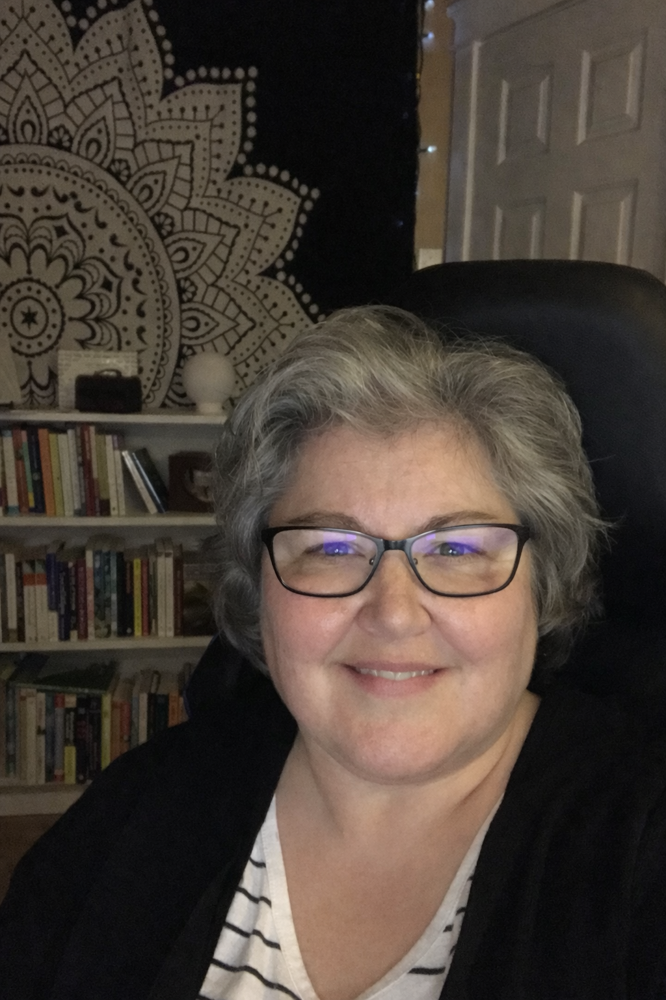

About Stephany MacDow, M.A., R. Psych.

Stephany MacDow is a Registered Psychologist and the founder of Morine-MacDow Psychological Services. She has more than 26 years of experience working with children, youth, and families.
She completed her Bachelor of Science degree with Honours in Psychology at Acadia University and earned a Master of Arts degree in School and Child Clinical Psychology from the Ontario Institute for Studies in Education at the University of Toronto. She has been fully registered as a psychologist in Nova Scotia since 2005.Stephany began her career as a school psychologist with the Tri-County School Board, where she conducted psychoeducational assessments for students in the Digby, Yarmouth, and Shelburne regions. In 2002, she joined the Nova Scotia Health Authority as a clinical psychologist on the Child and Adolescent team at Digby Mental Health, where she remained for 22 years.
Stephany established her private practice in 2017 and currently provides virtual services to children, youth, and families throughout Nova Scotia.
Stephany lives in Lawrencetown (Annapolis County) with her husband, son and their three pets. In her free time, she enjoys reading, stargazing, and spending time with her family.